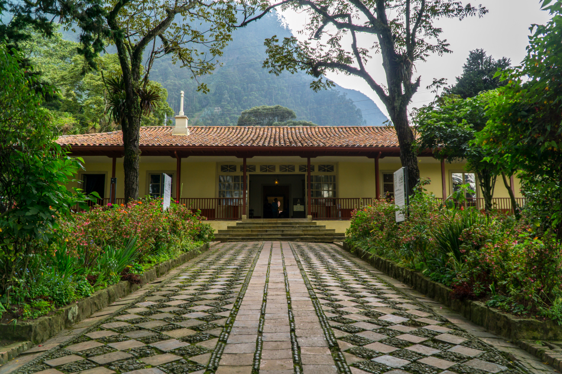
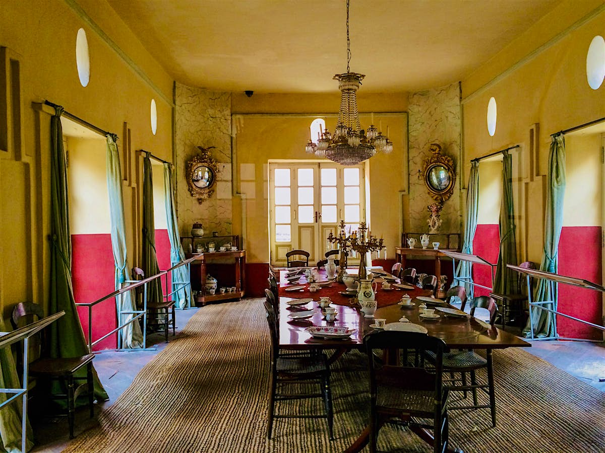
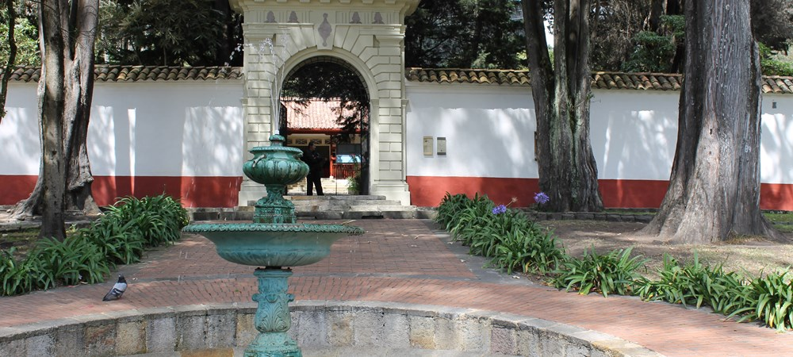
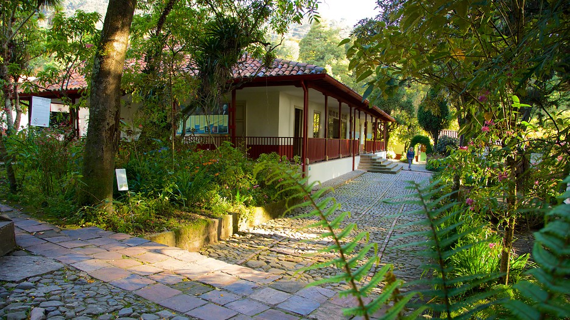

La Quinta de Bolívar es una casa museo ubicada en Bogotá que fue residencia del Libertador Simón Bolívar. Este lugar histórico permite conocer más sobre su vida, el proceso de independencia y la arquitectura colonial.
Ubicación
Dirección: Calle 21 #4A-30, Bogotá, Colombia.
Coordenadas: 4.6011° N, 74.0664° W
¿Cómo llegar?
- A pie: A pocos minutos del centro histórico y el cerro de Monserrate.
- TransMilenio: Estación Las Aguas o Museo del Oro (línea A).
- Bus: Rutas del SITP por la Carrera 3 y la Avenida Jiménez.
Horarios
- Martes a viernes: 9:00 a.m. - 5:00 p.m.
- Sábados y domingos: 10:00 a.m. - 4:00 p.m.
- Lunes: Cerrado
Precios
- 🔸 Entrada general: $4.000 COP
- 🔸 Estudiantes: $3.000 COP
- 🔸 Niños y adultos mayores: Entrada gratuita
- 🔸 Domingos: Entrada gratuita para todos los visitantes


